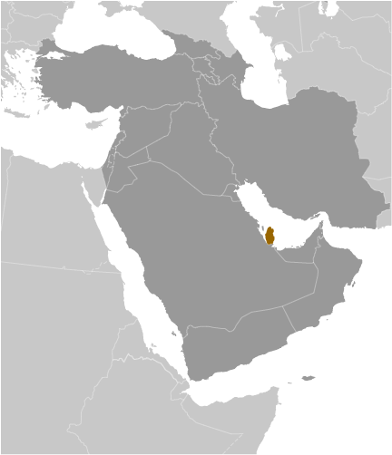
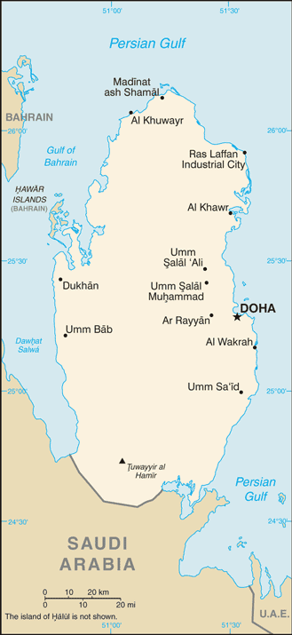
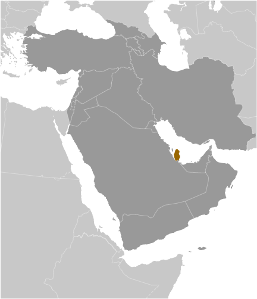
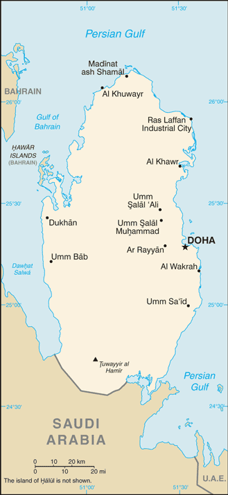

-
Introduction :: Qatar
-
Background:
Ruled by the Al Thani family since the mid-1800s, Qatar within the last 60 years transformed itself from a poor British protectorate noted mainly for pearling into an independent state with significant oil and natural gas revenues. The continuous siphoning off of petroleum revenue through the mid-1990s by Qatari amirs permanently residing in Europe had stunted Qatar’s economic growth. Former amir HAMAD bin Khalifa Al Thani, who overthrew his father in a bloodless coup in 1995, ushered in wide-sweeping political and media reforms, unprecedented economic investment, and a growing Qatari regional leadership role, in part through the creation of the pan-Arab satellite news network Al-Jazeera and Qatar's mediation of some regional conflicts. In the 2000s, Qatar resolved its longstanding border disputes with both Bahrain and Saudi Arabia and by 2007 had attained the highest per capita income in the world. Qatar did not experience domestic unrest or violence like that seen in other Near Eastern and North African countries in 2010-11, due in part to its immense wealth. In mid-2013, HAMAD peacefully abdicated, transferring power to his son, the current Amir TAMIM bin Hamad. TAMIM remains popular with the Qatari public, having prioritized improving the domestic welfare of Qataris, including establishing advanced healthcare and education systems and expanding the country's infrastructure in anticipation of Doha's hosting of the 2022 World Cup.
Recently, Qatar’s relationships with its neighbors have been tense at times. Following the outbreak of regional unrest in 2011, Doha prided itself on its support for many popular revolutions, particularly in Libya and Syria. This stance was to the detriment of Qatar’s relations with Bahrain, Saudi Arabia, and the United Arab Emirates (UAE), which temporarily recalled their respective ambassadors from Doha in March 2014. TAMIM later oversaw a warming of Qatar’s relations with Bahrain, Saudi Arabia, and the UAE in November 2014 following Kuwaiti mediation and signing of the Riyadh Agreement. In June 2017, however, the Quartet — Bahrain, Egypt, Saudi Arabia, and the UAE — cut diplomatic and economic ties with Qatar in response to alleged violations of the agreement.
-
Geography :: Qatar
-
Location:Middle East, peninsula bordering the Persian Gulf and Saudi ArabiaGeographic coordinates:25 30 N, 51 15 EMap references:Middle EastArea:total: 11,586 sq kmland: 11,586 sq kmwater: 0 sq kmcountry comparison to the world: 165Area - comparative:almost twice the size of Delaware; slightly smaller than ConnecticutLand boundaries:total: 87 kmborder countries (1): Saudi Arabia 87 kmCoastline:563 kmMaritime claims:territorial sea: 12 nmexclusive economic zone: as determined by bilateral agreements or the median linecontiguous zone: 24 nmClimate:arid; mild, pleasant winters; very hot, humid summersTerrain:mostly flat and barren desertElevation:mean elevation: 28 melevation extremes: 0 m lowest point: Persian Gulf103 highest point: Tuwayyir al HamirNatural resources:petroleum, fish, natural gasLand use:agricultural land: 5.6% (2011 est.)arable land: 1.1% (2011 est.) / permanent crops: 0.2% (2011 est.) / permanent pasture: 4.3% (2011 est.)forest: 0% (2011 est.)other: 94.4% (2011 est.)Irrigated land:130 sq km (2012)Population distribution:most of the population is clustered in or around the capital of Doha on the eastern side of the peninsulaNatural hazards:haze, dust storms, sandstorms commonEnvironment - current issues:air, land, and water pollution are significant environmental issues; limited natural freshwater resources are increasing dependence on large-scale desalination facilities; other issues include conservation of oil supplies and preservation of the natural wildlife heritageEnvironment - international agreements:party to: Biodiversity, Climate Change, Climate Change-Kyoto Protocol, Desertification, Endangered Species, Hazardous Wastes, Law of the Sea, Ozone Layer Protection, Ship Pollutionsigned, but not ratified: none of the selected agreementsGeography - note:the peninsula occupies a strategic location in the central Persian Gulf near major petroleum deposits
-
People and Society :: Qatar
-
Population:2,363,569 (July 2018 est.)country comparison to the world: 143Nationality:noun: Qatari(s)adjective: QatariEthnic groups:non-Qatari 88.4%, Qatari 11.6% (2015 est.)Languages:Arabic (official), English commonly used as a second languageReligions:Muslim 67.7%, Christian 13.8%, Hindu 13.8%, Buddhist 3.1%, folk religion (2010 est.)Age structure:0-14 years: 12.7% (male 151,888 /female 148,186)15-24 years: 12.12% (male 205,242 /female 81,297)25-54 years: 70.67% (male 1,391,192 /female 279,256)55-64 years: 3.44% (male 62,683 /female 18,731)65 years and over: 1.06% (male 16,295 /female 8,799) (2018 est.)population pyramid:
 The World Factbook Field Image ModalMiddle East :: Qatar Print
The World Factbook Field Image ModalMiddle East :: Qatar Print Image DescriptionThis is the population pyramid for Qatar. A population pyramid illustrates the age and sex structure of a country's population and may provide insights about political and social stability, as well as economic development. The population is distributed along the horizontal axis, with males shown on the left and females on the right. The male and female populations are broken down into 5-year age groups represented as horizontal bars along the vertical axis, with the youngest age groups at the bottom and the oldest at the top. The shape of the population pyramid gradually evolves over time based on fertility, mortality, and international migration trends.
Image DescriptionThis is the population pyramid for Qatar. A population pyramid illustrates the age and sex structure of a country's population and may provide insights about political and social stability, as well as economic development. The population is distributed along the horizontal axis, with males shown on the left and females on the right. The male and female populations are broken down into 5-year age groups represented as horizontal bars along the vertical axis, with the youngest age groups at the bottom and the oldest at the top. The shape of the population pyramid gradually evolves over time based on fertility, mortality, and international migration trends.
For additional information, please see the entry for Population pyramid on the Definitions and Notes page under the References tab.Dependency ratios:total dependency ratio: 17.5 (2015 est.)youth dependency ratio: 16.3 (2015 est.)elderly dependency ratio: 1.3 (2015 est.)potential support ratio: 78.1 (2015 est.)Median age:total: 33.4 yearsmale: 34.6 yearsfemale: 28.2 years (2018 est.)country comparison to the world: 95Population growth rate:1.95% (2018 est.)country comparison to the world: 50Birth rate:9.5 births/1,000 population (2018 est.)country comparison to the world: 200Death rate:1.6 deaths/1,000 population (2018 est.)country comparison to the world: 226Net migration rate:14.6 migrant(s)/1,000 population (2017 est.)country comparison to the world: 3Population distribution:most of the population is clustered in or around the capital of Doha on the eastern side of the peninsulaUrbanization:urban population: 99.1% of total population (2018)rate of urbanization: 2.41% annual rate of change (2015-20 est.)Major urban areas - population:633,000 DOHA (capital) (2018)Sex ratio:at birth: 1.02 male(s)/female (2017 est.)0-14 years: 1.03 male(s)/female (2017 est.)15-24 years: 2.64 male(s)/female (2017 est.)25-54 years: 4.91 male(s)/female (2017 est.)55-64 years: 3.38 male(s)/female (2017 est.)65 years and over: 1.71 male(s)/female (2017 est.)total population: 3.41 male(s)/female (2017 est.)Maternal mortality rate:13 deaths/100,000 live births (2015 est.)country comparison to the world: 140Infant mortality rate:total: 6 deaths/1,000 live births (2018 est.)male: 6.3 deaths/1,000 live births (2018 est.)female: 5.7 deaths/1,000 live births (2018 est.)country comparison to the world: 166Life expectancy at birth:total population: 79 years (2018 est.)male: 76.9 years (2018 est.)female: 81.2 years (2018 est.)country comparison to the world: 53Total fertility rate:1.89 children born/woman (2018 est.)country comparison to the world: 136Contraceptive prevalence rate:37.5% (2012)Health expenditures:2.2% of GDP (2014)country comparison to the world: 189Physicians density:1.96 physicians/1,000 population (2014)Hospital bed density:1.2 beds/1,000 population (2014)Drinking water source:improved: urban: 100% of populationrural: 100% of populationtotal: 100% of populationunimproved: urban: 0% of populationrural: 0% of populationtotal: 0% of population (2015 est.)Sanitation facility access:improved: urban: 98% of population (2015 est.)rural: 98% of population (2015 est.)total: 98% of population (2015 est.)unimproved: urban: 2% of population (2015 est.)rural: 2% of population (2015 est.)total: 2% of population (2015 est.)HIV/AIDS - adult prevalence rate:0.1% (2017 est.)country comparison to the world: 118HIV/AIDS - people living with HIV/AIDS:<500 (2017 est.)HIV/AIDS - deaths:<100 (2017 est.)Obesity - adult prevalence rate:35.1% (2016)country comparison to the world: 15Education expenditures:3.6% of GDP (2014)country comparison to the world: 125Literacy:definition: age 15 and over can read and write (2015 est.)total population: 97.3% (2015 est.)male: 97.4% (2015 est.)female: 96.8% (2015 est.)School life expectancy (primary to tertiary education):total: 13 years (2011)male: 13 years (2011)female: 14 years (2011)Unemployment, youth ages 15-24:total: 0.5% (2016 est.)male: 0.2% (2016 est.)female: 2.1% (2016 est.)country comparison to the world: 174 -
Government :: Qatar
-
Country name:conventional long form: State of Qatarconventional short form: Qatarlocal long form: Dawlat Qatarlocal short form: Qataretymology: the origin of the name is uncertain, but it dates back at least 2,000 years since a term "Catharrei" was used to describe the inhabitants of the peninsula by Pliny the Elder (1st century A.D.), and a "Catara" peninsula is depicted on a map by Ptolemy (2nd century A.D.)
note: closest approximation of the native pronunciation is gattar or cottar
Government type:absolute monarchyCapital:name: Dohageographic coordinates: 25 17 N, 51 32 Etime difference: UTC+3 (8 hours ahead of Washington, DC, during Standard Time)Administrative divisions:8 municipalities (baladiyat, singular - baladiyah); Ad Dawhah, Al Khawr wa adh Dhakhirah, Al Wakrah, Ar Rayyan, Ash Shamal, Ash Shihaniyah, Az Za'ayin, Umm SalalIndependence:3 September 1971 (from the UK)National holiday:National Day, 18 December (1878), anniversary of Al Thani family accession to the throne; Independence Day, 3 September (1971)Constitution:history: previous 1972 (provisional); latest drafted 2 July 2002, approved by referendum 29 April 2003, endorsed 8 June 2004, effective 9 June 2005 (2016)amendments: proposed by the emir or by one-third of Advisory Council members; passage requires two-thirds majority vote of Advisory Council members and approval and promulgation by the emir; articles pertaining to the rule of state and its inheritance, functions of the emir, and citizen rights and liberties cannot be amended (2016)Legal system:mixed legal system of civil law and Islamic law (in family and personal matters)International law organization participation:has not submitted an ICJ jurisdiction declaration; non-party state to the ICCtCitizenship:citizenship by birth: nocitizenship by descent only: the father must be a citizen of Qatardual citizenship recognized: noresidency requirement for naturalization: 20 years; 15 years if an Arab nationalSuffrage:18 years of age; universalJudicial branch:highest courts: Supreme Court or Court of Cassation (consists of the court president and several judges); Supreme Constitutional Court (consists of the chief justice and 6 members)judge selection and term of office: Supreme Court judges nominated by the Supreme Judiciary Council, a 9-member independent body consisting of judiciary heads appointed by the Amir; judges appointed for 3-year renewable terms; Supreme Constitutional Court members nominated by the Supreme Judiciary Council and appointed by the monarch; term of appointment NAsubordinate courts: Courts of Appeal; Administrative Court; courts of first instance; sharia courts; Courts of Justice; Qatar International Court and Dispute Resolution Center, established in 2009, provides dispute resolution services for institutions and bodies in Qatar, as well as internationallyExecutive branch:chief of state: Amir TAMIM bin Hamad Al Thani (since 25 June 2013)head of government: Prime Minister ABDALLAH bin Nasir bin Khalifa Al Thani (since 26 June 2013); Deputy Prime Minister and Minister of State for Defense Affairs Khalid bin Mohamed al-Thani (since 14 November 2017); Deputy Prime Minister and Minister of Foreign Affairs Mohamed bin Abdulrahman Al Thani (since 14 November 2017)cabinet: Council of Ministers appointed by the amirelections/appointments: the monarchy is hereditary; prime minister and deputy prime minister appointed by the amirLegislative branch:description: unicameral Advisory Council or Majlis al-Shura (45 seats; 30 members directly elected by popular vote for 4-year re-electable terms and 15 appointed by the monarch to serve until resignation or until relievedelections: last on 17 June 2016 (term extended to 2019)election results: NA; composition - men 41, women 4, percent of women 8.9%Political parties and leaders:political parties are bannedInternational organization participation:ABEDA, AFESD, AMF, CAEU, CD, CICA (observer), EITI (implementing country), FAO, G-77, GCC, IAEA, IBRD, ICAO, ICC (national committees), ICRM, IDA, IDB, IFAD, IFC, IFRCS, IHO, ILO, IMF, IMO, IMSO, Interpol, IOC, IOM (observer), IPU, ISO, ITSO, ITU, LAS, MIGA, NAM, OAPEC, OAS (observer), OIC, OIF, OPCW, OPEC, PCA, UN, UNCTAD, UNESCO, UNIDO, UNIFIL, UNWTO, UPU, WCO, WHO, WIPO, WMO, WTODiplomatic representation in the US:chief of mission: Ambassador MISHAL bin Hamad bin Muhammad Al Thani (since 24 April 2017)chancery: 2555 M Street NW, Washington, DC 20037telephone: [1] (202) 274-1600FAX: [1] (202) 237-0682consulate(s) general: Houston, Los AngelesDiplomatic representation from the US:chief of mission: Ambassador (vacant); Charge d'Affaires Ryan GLIHA (since 30 November 2017)embassy: 22 February Street, Al Luqta District, Dohamailing address: P. O. Box 2399, Dohatelephone: [974] 4496-6000FAX: [974] 4488-4298Flag description:maroon with a broad white serrated band (nine white points) on the hoist side; maroon represents the blood shed in Qatari wars, white stands for peace; the nine-pointed serrated edge signifies Qatar as the ninth member of the "reconciled emirates" in the wake of the Qatari-British treaty of 1916note: the other eight emirates are the seven that compose the UAE and Bahrain; according to some sources, the dominant color was formerly red, but this darkened to maroon upon exposure to the sun and the new shade was eventually adopted
National symbol(s):a maroon field surmounted by a white serrated band with nine white points; national colors: maroon, whiteNational anthem:name: "Al-Salam Al-Amiri" (The Amiri Salute)lyrics/music: Sheikh MUBARAK bin Saif al-Thani/Abdul Aziz Nasser OBAIDANnote: adopted 1996; anthem first performed that year at a meeting of the Gulf Cooperative Council hosted by Qatar
-
Economy :: Qatar
-
Economy - overview:
Qatar’s oil and natural gas resources are the country’s main economic engine and government revenue source, driving Qatar’s high economic growth and per capita income levels, robust state spending on public entitlements, and booming construction spending, particularly as Qatar prepares to host the World Cup in 2022. Although the government has maintained high capital spending levels for ongoing infrastructure projects, low oil and natural gas prices in recent years have led the Qatari Government to tighten some spending to help stem its budget deficit.
Qatar’s reliance on oil and natural gas is likely to persist for the foreseeable future. Proved natural gas reserves exceed 25 trillion cubic meters - 13% of the world total and, among countries, third largest in the world. Proved oil reserves exceed 25 billion barrels, allowing production to continue at current levels for about 56 years. Despite the dominance of oil and natural gas, Qatar has made significant gains in strengthening non-oil sectors, such as manufacturing, construction, and financial services, leading non-oil GDP to steadily rise in recent years to just over half the total.
Following trade restriction imposed by Saudi Arabia, the UAE, Bahrain, and Egypt in 2017, Qatar established new trade routes with other countries to maintain access to imports.
GDP (purchasing power parity):$339.5 billion (2017 est.)$334.2 billion (2016 est.)$327.3 billion (2015 est.)note: data are in 2017 dollars
country comparison to the world: 52GDP (official exchange rate):$166.9 billion (2017 est.) (2017 est.)GDP - real growth rate:1.6% (2017 est.)2.1% (2016 est.)3.7% (2015 est.)country comparison to the world: 169GDP - per capita (PPP):$124,100 (2017 est.)$127,700 (2016 est.)$134,200 (2015 est.)note: data are in 2017 dollars
country comparison to the world: 2Gross national saving:50.2% of GDP (2017 est.)42.4% of GDP (2016 est.)47.4% of GDP (2015 est.)country comparison to the world: 1GDP - composition, by end use:household consumption: 24.6% (2017 est.)government consumption: 17% (2017 est.)investment in fixed capital: 43.1% (2017 est.)investment in inventories: 1.5% (2017 est.)exports of goods and services: 51% (2017 est.)imports of goods and services: -37.3% (2017 est.)GDP - composition, by sector of origin:agriculture: 0.2% (2017 est.)industry: 50.3% (2017 est.)services: 49.5% (2017 est.)Agriculture - products:fruits, vegetables; poultry, dairy products, beef; fishIndustries:liquefied natural gas, crude oil production and refining, ammonia, fertilizer, petrochemicals, steel reinforcing bars, cement, commercial ship repairIndustrial production growth rate:3% (2017 est.)country comparison to the world: 105Labor force:1.953 million (2017 est.)country comparison to the world: 126Unemployment rate:8.9% (2017 est.)11.1% (2016 est.)country comparison to the world: 128Population below poverty line:NADistribution of family income - Gini index:41.1 (2007)country comparison to the world: 58Budget:revenues: 44.1 billion (2017 est.)expenditures: 53.82 billion (2017 est.)Taxes and other revenues:26.4% (of GDP) (2017 est.)country comparison to the world: 112Budget surplus (+) or deficit (-):-5.8% (of GDP) (2017 est.)country comparison to the world: 179Public debt:53.8% of GDP (2017 est.)46.7% of GDP (2016 est.)country comparison to the world: 88Fiscal year:1 April - 31 MarchInflation rate (consumer prices):0.4% (2017 est.)2.7% (2016 est.)country comparison to the world: 25Central bank discount rate:5% (16 March 2017)4.5% (31 December 2012)country comparison to the world: 82Commercial bank prime lending rate:4.95% (31 December 2017 est.)4.51% (31 December 2016 est.)country comparison to the world: 152Stock of narrow money:$34.71 billion (31 December 2017 est.)$36.14 billion (31 December 2016 est.)country comparison to the world: 59Stock of broad money:$34.71 billion (31 December 2017 est.)$36.14 billion (31 December 2016 est.)country comparison to the world: 59Stock of domestic credit:$246.7 billion (31 December 2017 est.)$224.2 billion (31 December 2016 est.)country comparison to the world: 42Current account balance:$6.426 billion (2017 est.)-$8.27 billion (2016 est.)country comparison to the world: 27Exports:$67.5 billion (2017 est.)$57.25 billion (2016 est.)country comparison to the world: 44Exports - partners:Japan 17.3%, South Korea 16%, India 12.6%, China 11.2%, Singapore 8.2%, UAE 6.4% (2017)Exports - commodities:liquefied natural gas (LNG), petroleum products, fertilizers, steelImports:$30.77 billion (2017 est.)$31.93 billion (2016 est.)country comparison to the world: 68Imports - commodities:machinery and transport equipment, food, chemicalsImports - partners:China 10.9%, US 8.9%, UAE 8.5%, Germany 8.1%, UK 5.5%, India 5.4%, Japan 5.3%, Italy 4.3% (2017)Reserves of foreign exchange and gold:$15.01 billion (31 December 2017 est.)$31.89 billion (31 December 2016 est.)country comparison to the world: 68Debt - external:$167.8 billion (31 December 2017 est.)$157.9 billion (31 December 2016 est.)country comparison to the world: 39Stock of direct foreign investment - at home:$36.29 billion (31 December 2017 est.)$35.31 billion (31 December 2016 est.)country comparison to the world: 66Stock of direct foreign investment - abroad:$59.33 billion (31 December 2017 est.)$57.63 billion (31 December 2016 est.)country comparison to the world: 39Exchange rates:Qatari rials (QAR) per US dollar -3.64 (2017 est.)3.64 (2016 est.)3.64 (2015 est.)3.64 (2014 est.)3.64 (2013 est.) -
Energy :: Qatar
-
Electricity access:population without electricity: 45,165 (2012)electrification - total population: 98% (2012)electrification - urban areas: 98% (2012)electrification - rural areas: 93% (2012)Electricity - production:39.78 billion kWh (2016 est.)country comparison to the world: 58Electricity - consumption:37.24 billion kWh (2016 est.)country comparison to the world: 58Electricity - exports:0 kWh (2016 est.)country comparison to the world: 186Electricity - imports:0 kWh (2016 est.)country comparison to the world: 188Electricity - installed generating capacity:8.796 million kW (2016 est.)country comparison to the world: 66Electricity - from fossil fuels:100% of total installed capacity (2016 est.)country comparison to the world: 15Electricity - from nuclear fuels:0% of total installed capacity (2017 est.)country comparison to the world: 169Electricity - from hydroelectric plants:0% of total installed capacity (2017 est.)country comparison to the world: 193Electricity - from other renewable sources:1% of total installed capacity (2017 est.)country comparison to the world: 163Crude oil - production:1.5 million bbl/day (2017 est.)country comparison to the world: 17Crude oil - exports:1.15 million bbl/day (2015 est.)country comparison to the world: 13Crude oil - imports:0 bbl/day (2015 est.)country comparison to the world: 183Crude oil - proved reserves:25.24 billion bbl (1 January 2018 est.)country comparison to the world: 13Refined petroleum products - production:273,800 bbl/day (2015 est.)country comparison to the world: 46Refined petroleum products - consumption:277,000 bbl/day (2016 est.)country comparison to the world: 45Refined petroleum products - exports:485,000 bbl/day (2015 est.)country comparison to the world: 18Refined petroleum products - imports:12,300 bbl/day (2015 est.)country comparison to the world: 143Natural gas - production:166.4 billion cu m (2017 est.)country comparison to the world: 4Natural gas - consumption:39.9 billion cu m (2017 est.)country comparison to the world: 26Natural gas - exports:126.5 billion cu m (2017 est.)country comparison to the world: 2Natural gas - imports:0 cu m (2017 est.)country comparison to the world: 176Natural gas - proved reserves:24.07 trillion cu m (1 January 2018 est.)country comparison to the world: 3Carbon dioxide emissions from consumption of energy:114.2 million Mt (2017 est.)country comparison to the world: 40
-
Communications :: Qatar
-
Telephones - fixed lines:total subscriptions: 440,909 (2017 est.)subscriptions per 100 inhabitants: 19 (2017 est.)country comparison to the world: 100Telephones - mobile cellular:total subscriptions: 3,913,809 (2017 est.)subscriptions per 100 inhabitants: 169 (2017 est.)country comparison to the world: 128Telephone system:general assessment: modern system centered in Doha (2016)domestic: combined fixed-line and mobile-cellular telephone subscribership exceeds 175 telephones per 100 persons (2016)international: country code - 974; landing point for the Fiber-Optic Link Around the Globe (FLAG) submarine cable network that provides links to Asia, Middle East, Europe, and the US; tropospheric scatter to Bahrain; microwave radio relay to Saudi Arabia and the UAE; satellite earth stations - 2 Intelsat (1 Atlantic Ocean and 1 Indian Ocean) and 1 Arabsat (2016)Broadcast media:TV and radio broadcast licensing and access to local media markets are state controlled; home of the satellite TV channel Al-Jazeera, which was originally owned and financed by the Qatari government but has evolved to independent corporate status; Al-Jazeera claims editorial independence in broadcasting; local radio transmissions include state, private, and international broadcasters on FM frequencies in Doha; in August 2013, Qatar's satellite company Es'hailSat launched its first communications satellite Es'hail 1 (manufactured in the US), which entered commercial service in December 2013 to provide improved television broadcasting capability and expand availability of voice and Internet; Es'hailSat expects to launch its second satellite in 2018 (2014)Internet country code:.qaInternet users:total: 2,129,360 (July 2016 est.)percent of population: 94.3% (July 2016 est.)country comparison to the world: 110Broadband - fixed subscriptions:total: 256,094 (2017 est.)subscriptions per 100 inhabitants: 11 (2017 est.)country comparison to the world: 101
-
Transportation :: Qatar
-
National air transport system:number of registered air carriers: 2 (2015)inventory of registered aircraft operated by air carriers: 199 (2015)annual passenger traffic on registered air carriers: 25,263,224 (2015)annual freight traffic on registered air carriers: 7,563,307,390 mt-km (2015)Civil aircraft registration country code prefix:A7 (2016)Airports:6 (2013)country comparison to the world: 174Airports - with paved runways:total: 4 (2017)over 3,047 m: 3 (2017)1,524 to 2,437 m: 1 (2017)Airports - with unpaved runways:total: 2 (2013)914 to 1,523 m: 1 (2013)under 914 m: 1 (2013)Heliports:1 (2013)Pipelines:288 km condensate, 221 km condensate/gas, 2383 km gas, 90 km liquid petroleum gas, 745 km oil, 103 km refined products (2013)Roadways:total: 9,830 km (2010)country comparison to the world: 136Merchant marine:total: 143 (2017)by type: bulk carrier 8, container ship 6, general cargo 5, oil tanker 6, other 118 (2017)country comparison to the world: 75Ports and terminals:major seaport(s): Doha, Musay'id, Ra's LaffanLNG terminal(s) (export): Ras Laffan
-
Military and Security :: Qatar
-
Military branches:Qatari Emiri Land Force (QELF), Qatari Emiri Navy (QEN), Qatari Emiri Air Force (QEAF) (2013)Military service age and obligation:conscription for males aged 18-35; 4-month general obligation, 3 months for graduates (2014)
-
Terrorism :: Qatar
-
Terrorist groups - foreign based:HAMAS:
aim(s): continue engagement with the Qatari Government
area(s) of operation: maintains a limited office in Doha (April 2018) -
Transnational Issues :: Qatar
-
Disputes - international:noneRefugees and internally displaced persons:stateless persons: 1,200 (2017)Trafficking in persons:current situation: Qatar is a destination country for men, women, and children subjected to forced labor, and, to a much lesser extent, forced prostitution; the predominantly foreign workforce migrates to Qatar legally for low- and semi-skilled work but often experiences situations of forced labor, including debt bondage, delayed or nonpayment of salaries, confiscation of passports, abuse, hazardous working conditions, and squalid living arrangements; foreign female domestic workers are particularly vulnerable to trafficking because of their isolation in private homes and lack of protection under Qatari labor laws; some women who migrate for work are also forced into prostitutiontier rating: Tier 2 Watch List – Qatar does not fully comply with the minimum standards for the elimination of trafficking; however, it is making significant efforts to do so; the government investigated 11 trafficking cases but did not prosecute or convict any offenders, including exploitative employers and recruitment agencies; the primary solution for resolving labor violations was to transfer a worker’s sponsorship to a new employer with minimal effort to investigate whether a forced labor violation had occurred; authorities increased their efforts to protect some trafficking victims, although many victims of forced labor, particularly domestic workers, remained unidentified and unprotected and were sometimes punished for immigration violations or running away from an employer or sponsor; authorities visited worksites throughout the country to meet and educate workers and employers on trafficking regulations, but the government failed to abolish or reform the sponsorship system, perpetuating Qatar’s forced labor problem (2015)
Middle East ::
Qatar